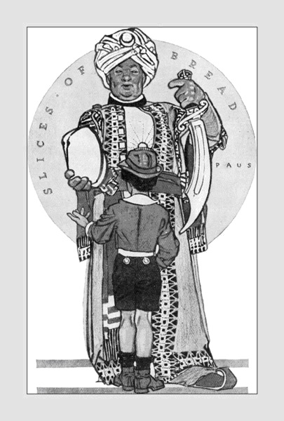

| Nội dung di bút: Kỳ nữ (Trích trong Mê hồn ca) Ta thường có từng buổi sầu ghê gớm Ở bên Em – ôi biển sắc, rừng hương! Em lộng lẫy, như một ngàn hoa sớm, Em đến đây như đến tự thiên đường. Đinh Hùng |
Đinh Hùng: Làm thơ, viết văn. Sinh ngày: 3-7-1920 tại Hà Đông. Mất ngày: 24-8-1967 tại Sài Gòn.
Tác phẩm: Mê hồn ca, thơ (Tiếng Phương Đông xuất bản, 1954, Hà Nội), Đường vào tình sử, thơ (Nam Chi, Sài Gòn, 1961), Ngày đó có em, thuật ký (Giao Điểm 1967)
Đinh Hùng
Với cơn mê trường dạ
Ta suốt đời ngư phủ
Thả con thuyền trên mái tóc em buồn lênh đênh.
(Đinh Hùng)
Đinh Hùng, con người có may mắn được mọi người biết đến từ khi tác phẩm hãy còn là bản thảo. Đinh Hùng, con người kỳ lạ xuất hiện trên thi đàn Việt Nam với vóc dáng quái dị của ngôn ngữ làm mê hoặc người yêu thơ. Đinh Hùng, tượng hình cô độc trên vòm trời thi ca Việt Nam vào năm 1940 đến 1945. Rồi từ đây, Đinh Hùng mới tìm thấy bạn đường như Trần Dần, Phùng Quán v.v… Chất thơ của Đinh Hùng không giống và không mang một ý nghĩa thông thường của thi ca với những hình ảnh quen thuộc của thi nhân đang nổi tiếng hồi đó như Xuân Diệu, Huy Cận, Vũ Hoàng Chương, Trần Huyền Trân, Thâm Tâm, Nguyễn Bính v.v…
Đinh Hùng đi vào thi ca với những ước mơ kỳ lạ và suy nghĩ về cõi vô thức giữa một thời đại lười suy nghĩ nhất. Tiếng thơ của Đinh Hùng không thuộc về thứ tình cảm chung chung, mà toát ra tự ngôn ngữ làn ánh sáng diễm ảo, ở trong đó, từng nỗi băn khoăn, từng niềm ước vọng chạy xôn xao như tiếng thời gian đuổi nhau trên rừng cây trút lá. Đinh Hùng tự mình tạo nên sắc thái đặc biệt, rất đặc biệt, để ngụp lặn trong dòng mê cảm đó với khổ đau cũng như kiêu hãnh. Từng hình ảnh mông lung, từng nỗi buồn vò xé, từng uất hận nghẹn ngào, tất cả, biến Đinh Hùng thành một nạn nhân, nạn nhân của mặc cảm. Đinh Hùng đã bị mặc cảm giày vò tái tê từ thể xác tới linh hồn. Mặc cảm đó là nỗi bơ vơ lạc loài của kiếp người trói buộc vào áo cơm trách nhiệm với ngần ấy vốn liếng riêng tư giữa cuộc sống xô bồ giả tạo. Đinh Hùng làm thơ chẳng phải để tỏ bày tâm sự mà để xác định thái độ, một thái độ bi phẫn khi nhận thấy kích thước trần gian không phải nơi mình mơ ước.
Cõi nhân gian mà Đinh Hùng vọng tưởng đã khuất lìa. Nó là tiếng nói hoang sơ của thời tiền sử. Nó là thiêng liêng cao cả của một khung trời nguyên thuỷ. Nó rộng rinh và chói lói hào quang ân sủng của thi nhân đóng vai Thượng Đế. Nó là cái nước Vô Danh với sự hiện diện của con người Mộng Ảo đi suốt một hành lang cô liêu muôn đời không gặp thực tại.
Dòng thơ của Đinh Hùng đi từ sự mê hoặc của tâm linh vượt đến cõi ý thức của thân phận qua thi phẩm Mê hồn ca rồi ném mình theo Đường vào tình sử. Khúc hát nào lênh đênh trôi nổi trên đầu non, và tâm hồn nào còn giữ nguyên màu trinh tuyết trong xác thịt chứa đầy tội lỗi bi thương? Trong cái bóng tối mênh mông dày đặc của tương lai, trong nỗi khao khát hung cuồng đắm đuối cắn chặt ở môi ngậm cứng trái sầu đau, Đinh Hùng nhắm mắt lại, mở hồn thoát du vào ảo giác.
Đinh Hùng vào đời như đi trong ác mộng. Những hình dáng con người di động giữa kích thước thành phố đã làm người thơ phẫn nộ:
“Miệng quát hỏi: có phải ngươi là bạn?
Ôi ngơ ngác một lũ người vong bản
Mất tinh thần từ những thuở xa xôi
Ta về đây lạ hết các ngươi rồi
Lạ tình cảm, lạ đời chung cách sống”.
(“Bài ca man rợ”, Mê hồn ca)
Đi từ cõi huyền ảo của tiềm thức, Đinh Hùng dùng tâm tư mong biến cuộc đời thành trường mộng. Hình ảnh một sinh vật đơn côi trong một thiên nhiên mới hình thành, tia sáng thứ nhất của tâm linh chiếu rọi vào sự vật như một chứng tích ghi nhận có đời sống trần gian với những huyền bí còn nguyên màu huyễn hoặc. Cái Thiên Nhiên mà người thơ vùng vẫy thả bỏ mọi níu kéo làm Đinh Hùng mo ước trở về, sự trở về trong những lối hoang sơ – ở đấy – bước chân đi làm rung chuyển núi rừng, đồi suối. Đau đớn thay, sự hiện diện này làm kinh ngạc cả nhan sắc, làm cho tình thương cũng mất chìm trong cô độc.
Từ cái nhìn cô độc, Đinh Hùng không tin cõi đời hiện hữu là có thực và người con gái bằng xương bằng thịt kia với những mùi hương quyến rũ, vụt chốc trở thành xa lạ đến nghi hoặc khởi đi từ tri giác:
“Ôm nhan sắc với hai bàn tay sắt
Ta nhìn ai, ôi khóe mắt ta nhìn
Em có là ma, là quỷ, là tiên?
Em có mấy linh hồn bao nhiêu mộng?
Em còn trái tim nào đang xúc động?
Em có gì trong xác thịt như hoa?
Lạc thiên nhiên đến cả bọn đàn bà,
Với những vẻ dung nhan kiều diễm nhất”.
(“Bài ca man rợ”, Mê hồn ca)
Cái vũ trụ mà Đinh Hùng vọng tưởng đó đã mất. Trong bóng tối mênh mông dày đặc của hiện tại, người thơ không trông mong tìm thấy những gì mình chờ đợi. Đinh Hùng nhắm mắt lại để du hồn vào quá khứ, đi về những hướng sao rơi và theo lối chân cầm thú. Trong trời thơ Nguyên Thuỷ, Đinh Hùng bơ vơ, lạc loài giữa thế giới tâm linh, với tất cả tiếc thương, hờn giận. Đinh Hùng ẩn hồn trong toà lâu đài kiến tạo bằng vân thạch, gọi hồn cổ sơ về ngồi chung tâm sự. Người thơ muốn được “ăn hoa man dại” rồi “ngủ như muông thú”. Nhưng cái sống của “Gái-muôn-đời” có “bộ ngực tròn nuôi cuộc sống đương xuân” không còn nữa. Nó đã chết theo tiếng cười man rợ và mối “Tình-thái-cổ” đã “thơ thẩn với trăng suông” tự ngày trái đất có con hươu vàng diệp, cất cao đầu nhìn hoàng hôn chìm vào đêm Thơ hiền hậu.
Do đấy, cái khung trời mà Đinh Hùng dùng để viết thơ của mình lên, là một khung trời chứa chấp toàn huyền ảo giữa người và sự vật, giữa suy tưởng và thiên nhiên, giữa mơ mộng và thực tế. Vì nhìn rõ vị trí của mình trong cuộc sống có đấy, Đinh Hùng chẳng cần tra vấn hiện tại, phó mặc thời gian vận chuyển, hằng đêm, bên ánh toạ đăng, lắng nghe tiếng thơ nức nở âm vang theo từng sợi khói mong manh:
“Đi vào mộng những Sơn Thân yên ngủ
Đôi hồn người tưởng gặp bóng cô đơn
Rượu Trường Sinh: ta uống mắt em buồn
Sầu mấy kiếp, giấc ngủ say bừng đỏ?
Quên đi em, hãy sống đời cây cỏ
Từng linh hồn dan díu với hương hoa
Ta nhớ xưa: đêm thu rụng tiếng gà
Trăng vĩnh viễn khóc thời gian tình tự…”
(“Trời ảo diệu”, Mê hồn ca)
Cái thời gian tình tự đó, có lẽ, chỉ hiện diện trong cơn say men khói vì “bầy xứ tình” đã khuất chìm theo lối mộng mà người thơ đã từng đi về “ân ái cũ”. Từng nhịp thở của đôi hồn người cô đơn cứ khắc khoải, chập chờn trong trí não Đinh Hùng làm cho chết ngợp cả một vùng ảo diệu.
Tiếng thơ Đinh Hùng không phải tiếng thơ buông lơi, dễ dãi hoặc chọn lời lựa chữ cho suôn sẻ thanh âm. Nói cho đúng, nó là chuỗi kim cương sáng ngời, như những vì sao lạ treo chênh vênh giữa vòm trời thi ca hiện đại.
Trong giai đoạn nguyên thuỷ, Đinh Hùng mang tâm trạng kẻ lạc loài giữa đồng loại không chấp nhận sự hiện hữu này là thực thể, nên luôn luôn người thơ đi tìm kiếm cho riêng mình một giá trị trong những giá trị có đó. Đinh Hùng mang tâm tư của loài rong biển trôi dạt theo lớp sóng ngầm giữa lòng đại dương bát ngát, phó mặc cho dòng nước luân lưu đưa đẩy, miễn tìm thấy hồn thời gian qua vọng tưởng.
Đi từ thơ Nguyên Thuỷ qua Thần Tượng, Đinh Hùng đã xê dịch từ rung cảm thuần tuý sang bình diện con người. Nghĩa là người thơ đã nhìn rõ giá trị của đời sống qua vóc dáng kỳ nữ – làm người thơ choáng váng.
“Ta thường có những buổi sầu ghê gớm
Ở bên Em – ôi biển sắc, rừng hương
Em lộng lẫy như một ngàn hoa sớm
Em đến đây như đến tự Thiên Đường
Những buổi đó, ta nhìn em kinh ngạc
Hồn mất dần trong cặp mắt lưu ly
Ôi mắt xa khơi! Ôi mắt dị kỳ
Ta trông đó thấy trời ta mơ ước
Thấy cả bóng một vầng đông thuở trước
Cả con đường sao mọc lúc ta đi
Cả chiều sương mây phủ lối ta về
Khắp vụ trụ bỗng vô cùng thương nhớ…”
(“Kỳ nữ”, Mê hồn ca)
Có lẽ, vóc dáng người kỳ nữ một sớm nào đó đã gõ nhẹ vào cửa lòng thi nhân làm cho tỉnh giấc. Bóng dáng động vân thạch bị lu mờ trước giai nhân và thời man rợ bị đẩy lui vào tưởng niệm. Cặp mắt lưu ly nào đó đã chiếu rọi vào tâm hồn thi nhân bằng tia sáng quang tuyến, có khả năng xuyên qua sự vật để nhận rõ bản thể đích thực của sự vật. Hơn thế nữa, nó còn cho người thơ tìm về thân phận với ước mơ còn đấy, với bóng vầng đông thuở trước và con đường sao mọc khi xưa. Thơ Đinh Hùng quả thực có ma lực, nó có đó mà vô cùng xa xôi, vô cùng cao trọng. Thực và Mộng luôn luôn xáo trộn tạo nên ấn tượng hoang vu, man rợ. Nó là tiếng kêu vò xé. Nó là lời thảng thốt giữa cơn mê loạn. Nó là nỗi đam mê bấn loạn. Nó là tiếng thở dài ai oán trút tự cõi lòng cô độc. Nó là thịt da, xương máu của thi nhân. Nó là sự giao hưởng nhiệm mầu giữa thơ và tơ trời kết lại:
“Ôi cám dỗ! Cả mình em băng tuyết
Rợn xuân tình lên bộ ngực thanh tân
Ta gần em, mê từ ngón bàn chân
Mắt nhắm lại, để lòng nguôi gió bão
Khi sùng bái ta quỳ nâng nếp áo
Nhưng cúi đầu trước vẻ ngọc trang nghiêm
Ta khẩn cầu từng sớm lại từng đêm
Chưa tội lỗi đã thấy tràn hối hận…”
(“Kỳ nữ”, Mê hồn ca)
Cái nhan sắc ấy làm Đinh Hùng hoảng hốt và mê đắm với lòng “sùng bái” như một tín đồ sùng bái đức “Giáo chủ”. Trong thơ Thần tượng, Đinh Hùng đã đóng vai gã si tình để tỏ bày ngưỡng mộ. Đối với thế gian, Đinh Hùng tỏ ra mình là thi nhân kiêu sa, còn đối với tình yêu Đinh Hùng muốn làm Bạo chúa.
“Ta quên hết! Ta sẽ làm Bạo chúa
Sống nghìn năm, ngự trị một lòng em
Cuộc ân tình ghê rợn suốt muôn đêm
Nào ai tiếc thương gì thân mỹ nữ!...”
("Ác mộng", Mê hồn ca)
Nhưng tình yêu với đôi cánh bay lượn chập chờn trong cõi nhớ mong và “người em gái” đã cùng thi nhân gặp gỡ trong “mộng linh hồn” đã vội trở thành một “yêu quái” biết cười vui và nói giọng êm đềm. Đinh Hùng phó mặc cho tình cảm lướt trôi cùng nhan sắc và nụ hôn đầu đã làm tê dại cả tâm can, người thơ gục khóc tưởng tình xưa ngồi cạnh. Rồi gác “ca-lâu” cũng rèm buông, lửa đỏ và xiêm áo như hoa thấp thoáng đi về giữa trời ảo ảnh.
Tình yêu đối với Đinh Hùng thoáng đến, thoáng đi và khắc sâu vào tâm khảm người thơ những lằn roi rướm máu.
Nhan sắc, nhan sắc thật mong manh và vô cùng diễm tuyệt. Đinh Hùng chưa kịp hưởng say men tình ái mà giông gió cuộc đời đã cuốn vội từng lớp tang thương. Từ hy vọng mê cuồng bước sang trời Chiêu Niệm. Người thơ đi tìm mình, đi tìm chân lý tuyệt đối của tình yêu trong đất lạnh, trong vóc dáng thương yêu gói tròn hoài vọng:
"Trời cuối thu rồi. Em ở đâu?
Nằm bên đất lạnh chắc em sầu
Thu ơi! Đánh thức hồn ma dậy
Ta muốn vào thăm nấm mộ sâu…"
("Gửi người dưới mộ", Mê hồn ca)
Mùa thu với từng cánh lá vàng đẹp như cánh thơ rơi tự trời cao. Mùa thu làm se ngọn cỏ hanh vàng trên nấm mộ. Mùa thu với đám mây lãng đãng trở về sau cuộc phiêu hành khắp vòm vũ trụ. Mùa thu có hồn Vệ Nữ lạc loài bên cửa huyệt, có cây Từ Bi chợt nở đóa Ác hoa mà thiện căn không tìm đâu thấy.
Những vần thơ Chiêu Niệm chảy dài như dòng lệ không bao giờ khô trên gương mặt thi nhân. Nó kéo lê thê như một ám ảnh trong mỗi câu, mỗi chữ với nhịp điệu tiếc nuối, than van với bóng tử thần chập chờn, đe doạ.
Nhưng rồi, tháng năm với những u buồn còn đấy, Đinh Hùng ném hồn mình vào cõi Mê Hồn, ở đó, cái đau và cái nhớ chợt tan biến để thi nhân nhìn hé thiên cơ với ánh lửa tinh cầu “dựng lên địa chấn, loạn màu huyền không”. Đinh Hùng van xin Trăng đừng bỏ kinh thành, đừng bỏ nhân gian để thi nhân nằm chờ Siêu Thoát, mơ đến những thanh âm tạo dựng một kiến trúc với chiêm bao thần bí:
“Lời nói im ta nằm chờ siêu thoát
Mơ hoàng thành dựng lại bản thanh âm
Mười ngón tay run
Mở cửa để cầm
Ôi kiến trúc một chiêm bao thần bí
Ta lạc hồn giữa lâu đài kỳ dị
Suốt muôn đời không hiểu dãy hành lang…”
(Mê hồn ca)
Làm sao mà Đinh Hùng có thể hiểu được vì thực tế và mơ mộng không nằm chung ước lệ. Cái chất thơ cứ vươn lên, vươn lên mãi trong khi thân phận nằm đây, soi lệch ánh toạ đăng mỗi đêm với muôn vạn nhọc nhằn:
“Máu ta say không chảy thoát hình hài
Hằng kinh động chốn ăn nằm vĩnh viễn…”
(Mê hồn ca)
Trước viễn ảnh chói loà của thi ca, Đinh Hùng dùng nghệ thuật để đồng hóa thể xác mình với thời gian vĩnh cửu.
“Buổi chiều đến, sầu lên Kim tự tháp
Bóng ta đi hoài cảm góc trời mây…”
Đó, tất cả cái sáng láng, cái tinh hoa của Đinh Hùng trình bày với người đọc những nỗi niềm mà người thơ thổ lộ qua vần, qua điệu. Đinh Hùng muốn vượt thoát hình hài, vượt thoát hoàn cảnh để tự do múa lượn trong cõi trường mộng, vì cuộc đời có khác gì mộng ảo?
Thơ Đinh Hùng chính thực không hoàn toàn mang tính chất quái dị, đúng ra, nó hình dung những siêu thoát, những nhiệm mầu mà con người trong khi thất vọng thường bám víu lấy để cầu mong an ủi. Người thơ đi tìm bản thân trong chiều sâu tâm giác, trong ngôn ngữ xuất thần với suy tư dấy loạn nội tâm. Do đấy, lời thơ Đinh Hùng bao giờ cũng vượt qua được bức trường thành nhân thế để chiếu từng tia sáng mong manh nhưng sắc bén giữa những tâm hồn đồng điệu:
“Khi mùa Xuân buông dài trước cửa
Khi nắng chiêm bao khẽ chớp hàng mi
Khi những con thuyền chở mộng ra đi
Giấc mộng phiêu lưu như bầy hải điểu
Kỷ niệm trở về nắm tay nhau hiền dịu
Ngón tay thơm vàng phấn bướm đa tình
Anh sẽ tìm em như tìm một hành tinh
Mặc trái đất sẽ tan vào mộng ảo…”
(“Đường vào tình sử”)
Tình yêu vẫn có uy lực dẫn dắt thi nhân đi vào muôn ngàn lối ân tình. Dù trái đất có tan vào mộng ảo, dù buổi chiều nào tận thế, dù mùa thu phôi pha, mùa đông tàn phế, ta vẫn vì em mà sống đời ngư phủ, thả con thuyền trên mái tóc em buồn lênh đênh và sau cùng để chiêm ngưỡng Em như chiêm ngưỡng một hành tinh xa lạ.
Phải nhận rằng, trong tập Đường vào tình sử (Nam Chi Tùng Thư xuất bản, 1961), hơi thở của Đinh Hùng đã phần nào là buông cung điệu và nỗi hoài mong của thi nhân chỉ gói tròn vào tình cảm thông thường nơi tình yêu đôi lứa, dù cho tình yêu có được thắp sáng bởi trí tuệ người thơ. Những nét độc đáo với dòng suy cảm quái đản được gọi về từ thiên cổ không thấy xuất hiện. Lời và ý thơ trong Đường vào tình sử thật dung dị và đẹp:
“Tôi nghe em nói bằng im lặng
Bằng dáng nghiêng nghiêng động nét mày
Bằng cả mênh mang chiều lắng đọng
Nụ cười em gửi gió thu bay
Tóc quyện mây choàng vai mộng nhỏ
Chìm chìm hơi nắng bước thu đi
Hôn như khói toả say tà lụa
Chợt tỉnh, còn như truyện ngủ mê…”
(Đường vào tình sử)
Toàn tập hầu như thế cả, nguyên lý không gây được ấn tượng sâu đậm nào ở trong tâm thức người đọc như Mê hồn ca. Sở dĩ như vậy vì tập Đường vào tỉnh sử là sự góp nhặt nhiều bài thơ ở nhiều thời kỳ đã đăng tải rải rác trong các tạp chí văn học. Nhưng dù sao, vẫn có trong đó cái “chất” Đinh Hùng, cái “chất” đã đưa Đinh Hùng vào ngôi vị xứng đáng của nền thi ca Việt Nam.
Đinh Hùng chịu ảnh hưởng rất nhiều ở dòng thơ Tượng Trưng Pháp với các thi hào Baudelaire và Mallarmé của thế kỷ XIX. Nhất là Baudelaire nhà phù thuỷ ngôn ngữ trong thi ca Pháp, người đã dịch truyện của văn hào Mỹ Edgar Poe và có tập Fleurs du Mal (Ác hoa) đã gây sôi nổi dư luận quần chúng Pháp vì những tư tưởng táo bạo trong thơ.
°
Khởi hành từ trạng thái đớn đau trong tình yêu với sự dằn vặt đoạ đày ở mỗi không-gian-cuộc-sống, Đinh Hùng nhìn chòng chọc vào nó như thách đố và coi nhẹ hệ luỵ đến đỗi tưởng rằng chỉ có thế giới linh hồn là thực, kỳ dư đều mộng ảo.
Có những đêm đông Hà Nội, tôi đến thăm Hùng tại căn nhà cổ nằm sâu trong ngõ hẹp ở cửa Ô Cầu Rền, chẳng cách xa phường Dạ Lạc là bao. Bước chân dò từng phiến gạch gồ ghề trơn trợt dưới lớp bùn quánh đặc. Đi qua chiếc sân đất rộng đầy cây cảnh hiện sừng sững với hình thể đục, nặng vì thiếu ánh sáng. Hương nha phiến thoáng ngát. Tôi bước lên thềm cao, căn nhà trống trải âm u dưới ngọn đèn dầu cháy leo lét ở một góc, chỉ vừa đủ soi sáng một khoảng nhỏ. Tiếng kêu vo vo của nhựa thuốc thiêu trên ngọn lửa làm tôi thấy nôn nao. Đã nhiều đêm tôi ngồi bên để nhìn các bạn vui, nhưng sao mỗi lần gặp tôi, tôi vẫn mang cảm giác rờn rợn như gặp yêu nữ.
Tôi đứng yên ở dưới mái hiên nhìn vào. Trước mắt tôi, dưới làn khói mỏng như tơ, Đinh Hùng nằm nhỏ nhoi tựa đứa bé. Mái tóc nặng nề lẩn vào bóng tối. Đôi mắt tinh anh, mở nửa vời dài dại. Tôi biết Đinh Hùng đang nhập mộng. Chừng một phút sau, Đinh Hùng nhỏm dậy, cầm ấm trà màu gạch cua rót vào chiếc chén hạt mít trắng muốt đưa lên môi. Tôi nhẹ nhàng đi về phía giường. Mùi ẩm mốc quyện vào dầu lạc làm khó thở. Biết tính, Đinh Hùng không bảo tôi nằm xuống như bao nhiêu bạn khác mà chỉ mời ngồi, rồi lại thản nhiên nằm nghiêng đối diện với ngọn đèn đỏ khè ngọn bấc.
Ở khoảng thời gian đó, Đinh Hùng đang đi vào Chiêu Niệm với sự nuối tiếc một hình ảnh hoang sơ man dại từ khi trái đất mới hình thành mà tất cả vạn vật đều trở thành thần tượng với vóc dáng thiên nhiên in hằn trong tâm tưởng. Vật chất đôi khi làm cho thi sĩ đớn đau nhớ tiếc khôn cùng. Tiếng khóc thê lương đòi về đáy mộ. Tấm hình hài nào đó với đường nét thanh tao, với nụ cười tắt nửa chừng, với đôi mắt lưu ly soi thấu vô cùng vũ trụ, và âm dương đòi tái hợp cuồng mê tâm tưởng! Ôi! Niềm giao ước hung tàn giữa kẻ chết, người sống, giữa cõi nhân gian và đáy mộ vực đen, giữa tiếc thương và hy vọng não nề. Đinh Hùng đi tìm tử thần bên cửa huyệt, hay “Trong giấc ngủ đẫm mùi hương phấn lạ”. Đinh Hùng phóng hồn mình vào cõi bi thương với lời van xin ứ nghẹn. Hùng cầu nguyện với tấm lòng trinh bạch như kẻ ngoan đạo nguyện cầu dưới chân đức Thích Ca hay Đức Jésus xin dâng hiến máu, tim mình cho nguồn sống thiêng liêng cao cả mà chẳng đòi nhận về ân tưởng. Trong cõi Mê cung, Hùng lạc vào với từng bước đắm say giữa “Nghìn yêu ma chung bước cõi luân hồi” với khúc hát Vong tình bay chót vót trên núi non mở hội oan hồn.
Trong không gian ấm mốc, giữa vùng mê hoặc của hương nha phiến, Đinh Hùng cất tiếng ngâm bài “Tìm bóng tử thần”. Giọng của Đinh Hùng sang sảng. Ánh đèn le lói với hoa bấc rung rinh. Tiếng thơ đã làm tôi rúng động và tôi đâu ngờ, 10 năm sau, tiếng ngâm thơ đó còn vang trên làn sóng điện, tạo niềm cảm thông sâu xa giữa Thơ và cuộc sống qua hội Tao Đàn.
Tôi thường đến thăm Đinh Hùng như thế, đôi khi với nhiều bạn khác. Hùng đã tạo cho mình một vị trí, vị trí đó, Hùng làm chủ suý với các người làm thơ tiến bộ tụ họp, trong số ấy có Trần Dần, Phùng Quán, Lê Văn Thanh, Bích Câu v.v…
Vì dấn thân quá sớm, nhất là dấn thân vào một địa hạt phức tạp đầy dẫy ưu phiền, Đinh Hùng đốt cháy thân phận chẳng những trên đầu ngọn bấc mà còn ở men rượu và sênh phách. Đinh Hùng huỷ hoại hoa niên trong những đêm dài Dạ Lạc qua các cửa Ô, cũng như đắm chìm vào đáy ly nồng đắng. Ở tuổi hoa niên, tôi quen nhiều bạn biết uống rượu, nhưng chưa thấy ai uống hào bằng Đinh Hùng và Văn Cao. Riêng Đinh Hùng có thể uống hai lít đế, không cần đồ nhắm. Vì thế, Hùng mới có gan đối ẩm với Tản Đà hằng nửa ngày trời.
Trong tháng ngày kháng chiến lênh đênh, chúng tôi gặp nhau ở chợ Đại thuộc Khu 3. Tôi và Hùng ngồi trong một quán nước. Hôm đó, không nhằm phiên chợ nên thật vắng vẻ. Những con đường bùn lầy, hố “tăng xê” ngập nước ở hai lối đi. Những mái lá cũ kỹ nằm trên hàng cột tre già láng bóng. Hùng cao giọng đọc thơ, những vần thơ mà kháng chiến không chấp nhận. Tôi gọi hai cút rượu uống cho ấm lòng. Chúng tôi vừa uống vừa thảo luận về thơ và nhắc đến Hà Nội mến thương cách trở. Chúng tôi gọi tên từng người bạn với u hoài kỷ niệm. Hùng kêu rượu nữa, rồi cho tay vào túi áo lấy một gói nhỏ. Hùng nhẹ nhàng mở ra, dốc dúm bột màu nâu sẫm vào lòng chén. Tôi nhìn Hùng mỉm cười. Hùng lạnh lùng rót rượu, lấy ngón tay trỏ khuấy nhẹ rồi ngửa mặt nuốt ực một hơi.
Sau chén rượu bất ngờ đó, tôi và Hùng chia tay. Nhưng bài thơ “Sông núi giao thần” của Hùng vẫn còn âm vang trong tôi như lời cầu nguyện:
“Trăng ơi đừng bỏ Kinh thành
Hồn Cố đô vẫn thanh bình như xưa
Nhỡn tiên chợt sáng Thiên cơ
Biết chăng ảo phố, mê đồ là đâu?..."
Sau thời gian lang thang khắp núi rừng Việt Bắc, bệnh sốt rét đã làm tôi phải trở về Khu 3 để tiếp nối những ngày vô định. Những con người văn nghệ thuở kháng chiến như những cánh chim trời bay lạc loài khắp nẻo. Gặp nhau đấy rồi xa nhau ngay, nên mỗi lần gặp, mỗi lần thương nhớ chẳng rời.
Nhân có cuộc họp văn nghệ, tôi và Hùng gặp lại nhau và cùng đi Đống Năm thuộc tỉnh Thái Bình. Lần này đi thêm hoạ sĩ Bùi Xuân Phái, người hoạ có dáng điệu khù khờ với bộ râu đỏ hoe mọc lởm chởm trên màu da trắng muốt.
Tôi nhớ buổi chiều hôm đó trời mưa bụi, chúng tôi lại ngồi uống rượu chờ tối để xuống đò. Mặt Hùng xanh mướt, một phần tại lạnh, một phần vì cơ cực. Chiếc trấn thủ màu cỏ già lem luốc, rộng thênh thang không làm ấm mảnh thân gầy phủ lên bộ quần áo nâu dính bùn bạc phếch. Ba chúng tôi khề khà cho đến lúc không gian mờ đục khuất chìm vào bóng đêm. Từng đốm lửa vàng hoe cháy hiu hắt đó đây. Hùng nhìn ánh đèn với nét mặt đăm chiêu.
Qua một đêm trắng nằm đò, chúng tôi lên bến Gián Khuất, đi Đống Năm, lướt qua bao nhiêu làng mạc, bao nhiêu cánh đồng và từng con đê dài thăm thẳm. Trong suốt cuộc hành trình Hùng nói rất nhiều về đủ mọi loại chuyện vui buồn. Hùng đọc thơ Baudelaire và rất thích cuộc sống của thi nhân này. Bài thơ mừng cô vợ da đen chết, Baudelaire lại được tự do, có thể lang thang uống rượu khắp nơi và ngủ ngon lành ở lề đường như con chó, làm Hùng cười sảng khoái.
Sau ba ngày đêm chung vui, chúng tôi lại nắm tay nhau giã từ. Hùng ở lại Đống Năm với Vũ Hoàng Chương để dạy học.
Vào năm 1949, áp lực chiến tranh mỗi ngày mỗi đè nặng vào vùng đất Liên khu 3. Những con chim trời bay tản mác khắp ngả để tìm nơi an lành trú ẩn. Thời gian trôi đi theo tiếng bom đạn cày nát quê hương đau khổ!
Đến cuối năm 50, Hùng trở về Hà Nội. Cuộc sống của Hùng có thay đổi, Hùng đã lập gia đình như lập trường thi ca vẫn y nguyên. Gánh nặng áo cơm và nguồn đam mê đến chết-không-rời quấn chặt lấy thân phận nhỏ nhoi đó mà hành hạ. Thiếu thốn thường xuyên nhưng Hùng vẫn giữ nguyên phong độ của kẻ sĩ. Hùng được một số bạn thương giúp đỡ nhưng sự giúp đỡ này chỉ như những gáo nước nhỏ tưới vào một vùng hạn hán trường kỳ. Cứ như thế, như thế, Hùng sống cho đến ngày di cư vào Nam với thi phẩm Mê hồn ca làm vốn liếng và hành lý.
Kể từ đó cuộc đời đối với Hùng đã phần nào đỡ khe khắt. Hùng cố gắng bằng đủ mọi cách như viết truyện dã sử dưới bút hiệu Hoài Điệp Thứ Lang, làm thơ trào phúng ký Thần Đăng, phụ trách mục Tao Đàn v.v… Cuối cùng Hùng đã ngã xuống với tiếc thương đòi đoạn và vĩnh viễn đi vào Cơn-mê-trường-dạ.
Đường vào tình sử còn dài lắm, Hùng đành bỏ dở, và có mái tóc nào buồn lênh đênh cho thuyền hồn thi nhân thả mộng?...
“Khi anh chết các Em về đây nhé
Vị chút tình lưu luyến với nhau xưa
Anh muốn thấy các em cùng nhỏ lệ
Tay cầm hoa, xoã tóc đứng bên mồ…”
("Cung đàn tưởng niệm", Đường vào tình sử)
Nói đến Đinh Hùng là nói đến cô đơn, là nói đến khát vọng. Nỗi cô đơn và niềm khát vọng đó in hằn trong kích thước thi ca mà Hùng đã dấn thân như người lính cảm tử. Hùng đã sống trọn vẹn và chung thuỷ đến lúc lìa đời với hướng đi tự nguyện. Bao nhiêu đau khổ, bao nhiêu mật đắng do cuộc đời trao tặng, Hùng đem thiêu trên đầu ngọn lửa và nuốt trọn vào tim phổi mình với nguồn vui ảo giác. Hùng rất mực đa tình nhưng mối tình đầu oan trái với người em họ đã thui chột nụ hoa tình ái và biến Hùng thành cuồng bạo trong mỗi suy nghĩ về tình yêu.
Nói đến Đinh Hùng, không phải nói đến cái gì mới lạ, vì thi ca Việt Nam bây giờ đã vượt thoát khỏi trạng thái ước lệ, nó đi vào cõi mông mênh của Vô Thức. Từ Vô Thức nó trình bày Ý Thức Mới không hẳn là cố định nhưng, nó là thời đại chúng ta đang góp mặt. Nói về Đinh Hùng là nhắc đến một không gian cũ, là nói tới khoảng cách – ở đó – từ hiện tại trở lui về quá khứ, chúng ta vẫn nhìn rõ ánh sáng của ngọn Thần Đăng chói loà hào quang kỳ ảo.
Trích thơ Đinh Hùng
Tìm bóng tử thần
Nàng nằm mộng suốt đêm hè dưới nguyệt,
Nụ cười buồn lay động ánh trăng sao.
Xa nấm mồ, chúng ta cuồng dại hết,
Để yêu tà về khóc dưới non cao.
Hồn Vệ Nữ lạc loài bên cửa huyệt,
Xuân bi thương – ôi má thắm, môi đào!
Bốn mùa trăng vào mở hội chiêm bao,
Trong giấc ngủ đẫm mùi hương phấn lạ.
Xa tục phố, đầy bức tranh thần hoạ,
Lẫn sâu, vui, ai nhớ tuổi sông hồ?
Ta biến hình, thoát khỏi trái tim xưa,
Quên tâm sự, chắc đau lòng cõi Đất?
Đêm huyền diệu mênh mông hồi thể chất.
Dựng Mê Cung, ta bắc dịp phù kiều.
Lửa tinh cầu bừng cặp mắt cô liêu,
Nhịp máu đọng kiếp Vô Thường hiu hắt.
Này Biển Giác: mây trời nghiêm nét mặt,
Cây Từ Bi hiện đóa Ác Hoa đầu,
Hồn gặp Hồn, ai biết thiện căn đâu?
Xuân phương thảo cũng như Xuân tùng bách.
Xin Thần Nữ tin lòng tôi trinh bạch,
Đốt kỳ thư còn mộng nét văn khôi.
Giữa hư không tìm lại vết chân Người,
Ôi xứ Đạo có bao mùa tình tự?
Trong bản hát thiêng
Của bầy thanh nữ,
Có ai về ngự,
Giữa lòng thuyền quyên?
Trong mộng trần duyên
Của hồn thiên cổ,
Có ai vào ngủ
Một giấc cô miên?
Trời ơi! Đây nguyệt vô biên
Trong lòng người đẹp nằm quên dưới mồ!
Ta cười suốt một trang thơ,
Gặp hồn em đó còn ngờ yêu ma.
Giáng Tiên đâu? Thế kỷ gian tà,
Dạo chơi bình địa tưởng qua hai tần.
Đi đi, cho hết dương trần,
Ngày mai tìm bóng Tử thần mà yêu!
Hương trinh bạch
Những người gái vẫn cùng ta gặp gỡ,
Cũng như em, giấu kín mộng linh hồn.
Cũng đắm tình trong mắt liếc, môi hôn,
Lòng chưa ngỏ cũng sẵn sàng ân ái.
Ta mê muội giữa một bầy yêu quái,
Biết cười vui, nói những giọng êm đềm.
Và than ôi! Tàn nhẫn cũng như Em,
Từng nhan sắc ngẩn ngơ hay kiều lệ.
Ta đau đớn mà yêu chưa kịp nghĩ,
Cả thịt xương mòn mỏi nhớ thương ai?
Đời hưng vong – ôi thành quách, lâu đài
Tự thiên cổ đừng buồn soi đáy nước!
Vườn Lạc Hoa ngày nay không quen thuộc,
Ta ngủ trong tưởng tượng vọng Đóa Hồng xa.
Bước chân em đánh thức dậy tình cờ
Để trông thấy buổi chiều về tiêu diệt.
Em giống ai? Ta điên rồi, không biết!
Nụ hôn đầu tê dại đến tâm can.
Ta nhìn theo hình bóng những năm tàn,
Tay sảng sốt vội ôm ghì xuân sắc.
Lời em nói, ta chưa hề nghi hoặc,
Tiếng em cười, ta vẫn khát khao nghe.
Ta van xin từng phút mộng vai kề,
Lòng tín ngưỡng cả mùi hương phản trắc.
Đời ta bỏ nằm trong tay Nữ Sắc,
Đêm hãi hùng nghe vẳng bước thời gian.
Bóng thê lương rờn rợn ghé bên màn,
Ta gục khóc, tưởng Tình Xưa ngồi cạnh.
Em đã đi như bao người gái lạnh,
Vẫn cùng ta gặp gỡ những đêm buồn.
Say vô cùng dư vị cặp môi son,
Thoảng xiêm áo, nhớ mùi hương da thịt.
Ta không biết, em ơi! Không dám biết,
Ai hững hờ, ai mộng với ai say?
Những ai kề môi ân ái vơi đầy,
Những ai nói, ai cười như hứa hẹn?
Quên Tình Ái, ta phá tàn cung điện,
Đi ngoài Sao thầm lặng khóc trời xanh.
Xa mắt em, xa ánh sáng kinh thành,
Mỗi bước chậm xót thương hồn đường phố.
Ôi gác ca lâu, rèm buông, lửa đỏ!
Ôi mộng xuân lả lướt những đêm tình!
Cốc rượu hồng, hy vọng sáng rung rinh,
Mùi son phấn khác gì hương trinh bạch?
Tỉnh truy hoan, ta vẫn là sầu khách,
Mảnh hồn đau lạc lõng dưới trăng tà.
Kìa, xiêm đào thương nữ thoáng như hoa…
Thần tụng
Trước ngọn thần đăng;
Chập chờn gió lốc.
Lạc giữa tang thương;
Hồn nào cô độc?
Bao trời viễn ảnh chờ cuối quan san;
Một khối thiên tư nằm trong u ngục.
Lũ chúng ta:
Mấy kẻ không nhà, tưởng dành bạc đức với nhân tình nên mê tràn tâm sự, có buổi vò nhung xé lụa, chưa mời giăng một tiệc đà nhắc giọng Lưu Linh;
Từng giờ thoát tục, đã quyết vô tâm cùng thể phách thì đốt trọn tinh anh, đòi phen khóc nhạc, cười hoa, chẳng luyến mộng mười năm cũng nổi tình Đỗ Mục.
Chiều Thăng Long sầu xuống bâng khuâng, cửa Đế Thành bỏ ngỏ, hằng gợi khi đời lạnh sương bay;
Hồn Do Thái gió lên bát ngát, niềm tâm ý đi xa, luống ngại lúc trời thanh Sao mọc.
Nhân thế bỏ hoài nhân thế. Ô! Bao phen dâu bể ngậm ngùi giấc mộng Châu Dương, ai đến đó xin bày riêng Ngự Uyển, còn khi Liễu ủ Đào phai;
Hồng nhan để mặc hồng nhan, ôi những trận cuồng phong tan tác cành hoa Thục Nữ! Ta về đây thử đốt hết A-Phòng, này lúc thành say, lửa bốc.
Mê thiên hạ vào một đêm hồng phấn, để ta quên nửa giấc u hoài;
Gọi sinh linh sang từng cuộc truy hoan, cho người tránh nghìn năm oan khốc.
Nhờ men phá hoại, xót giang sơn cười ngả cười nghiêng;
Mượn bút tung hoành, lỗi thời thế xoay ngang xoay dọc.
Hỡi ôi!
Luỵ tài hoa vẫn đành đoản mệnh, có say đâu một làn hương thoảng? Có yêu đâu một nét mây hờ? Sao còn ngộ, còn điên, còn dại? Trí cảm thông mờ ngủ dưới chao đèn;
Mộ nhan sắc đến nỗi vong tình, chẳng mê vì một bóng tiên qua, chẳng chết vì một bầy yêu đến, mà cũng hờn, cũng giận, cũng ghen, hồn lưu lạc mỉm cười trong đáy cốc.
Chúng ta đây:
Mấy lòng vương giả bơ vơ từ thuở suy vong, nửa cuộc giao tranh sầu đến tâm tình gỗ đá, kẻ phong sương, người lữ quán, dù chưa dựng kinh kỳ ảo tưởng đã xoay nghiêng gác phấn, lầu son;
Từng điểm tinh anh lang thang những chiều tái tạo, bốn mùa hôn phối hiện lên thanh sắc cỏ cây, màu quân tử, nét văn khôi, tuy chẳng ơn mưa móc từ bi cũng bừng nở cành vàng, lá ngọc.
Nào hiểu đâu thiên lương lúc mờ, lúc tỏ, vì hiện thân chốc chốc mỗi hư huyền, sớm rồi sớm nhớ màu xiêm mặc khách, vũ đài kia ai tỉnh với ai mê?
Sao chẳng biết hình hài là có, là không? Nhưng trường mộng đêm đêm hằng thấp thoáng, ngày lại ngày thương nét mặt nhân gian, thế sự ấy nên cười hay nên khóc?
Lũ chúng ta:
Một đoàn đãng tử, lấy bút thơ mà phác hoạ vũ trụ chi Tình, lại truyền bá Vô Vi chi Đạo, xét giang hồ chi khí cốt thực đã nên bốn phương huynh đệ, mười dặm thân sơ;
Xóm quê nhà:
Trăm họ thanh bình, dùng hương phấn để hình dung Giao Đài chi Cảnh, còn vun trồng Khoái Lạc chi Hoa, ngẫm tuyết nguyệt chi ân tình thì cũng đáng một nét phù vân, nghìn vàng tơ tóc.
Làng Yên Hoa tha thiết dáng yêu đào, này sân hồng lý, này mái Tây Hiên, giao những bóng bào huynh, xá muội, gần đây cũng tư thất son vàng;
Chiều lưu đãng ngẩn ngơ đường xa mã, có bước hồi hương, có giờ ái mộ, chen những hồn du mục tha phương, ghé đâu chẳng giang san gấm vóc.
Đồng cảm, đồng tâm, ai nói gì vong quốc hận? Vì đây cũng Cửa-Đình-Thét-Nhạc gọi hồn non nước tiêu sơ, sao chẳng muốn đeo bầu viễn thú, chở phăng lòng tới Giang Nam?
Một mình, một bóng, ta gợi chi cố viên tình? Mà đó thì bên gối Dâng Hương, cảm khói trường đình man mác, vậy cứ mơ lầm tẩu vân du, hướng thẳng hồn sang Tây Trúc?
Phù Dung bên phù thế, cõi nào thực cõi tiêu tao?
Hồng phấn lẫn hồng trần, đâu đã vì đâu ô trọc?
Ta hát mà chơi, ta sống đó tuy hư lại thực, giữa chợ đời vất vưởng bóng sầu nhân, thì bán rẻ linh hồn cho Quỷ, tìm Hỉ Thần kết bạn tâm giao;
Ngươi cười cho thoả, ngươi ở đây dẫu ác mà hiền, gần cửa mộ lạc loài hồn dị khách, hãy nhập chung tinh thể với Người, dùng độc dược thử lòng thế tục.
Lũ chúng ta:
Xoay nhỡn tiền lại nhắm hiện thân;
Lấy kỳ thư về làm sách học,
Mới hay:
Hồn hỡi hồn!
Trời đất ngủ trong chiều khói lửa
Hồn chập chờn bên cửa Dung Nhan.
Gọi nhau vào cuộc bi hoan,
Ta thiếu thể phách giải oan Hồn về.
Hồn lại đặt cơn mê cơn tỉnh,
Hồn lại bầy đêm quạnh đêm vui.
Hồn xui rượu nói lên lời,
Khói dâng thành ý, nhạc cười ra hoa.
Hồn bắt ai tiêu ma ngày tháng,
Hồn giúp ai quên lãng hình hài.
Hồn từ siêu thoát phàm thai,
Sầu trong tà dục, vui ngoài thiện tâm.
Hồn ở khắp sơn lâm, hồ hải,
Hồn sống trùm hiện tại, tương lai.
Mênh mang một tiếng cười dài,
Hồn lay bốn vách Dạ Đài cho tan.
Hồn hỡi hồn
Hồn phá hoại điêu tàn cuộc sống,
Hồn điểm trang ảo mộng đời tiên,
Hồn về nhập thuyền quyên,
Mượn duyên bèo nước làm duyên đá vàng.
Hồn thả bướm dựng làm Hồng phấn,
Hồn tung hoa bày trận Hương Say.
Hồn gieo phách ngọt, đàn hay,
Quần hồng phấp phới Hồn bay xuống trần.
Hồn mơn trớn ái ân cánh nhạc,
Hồn đẩy đưa khoái lạc thuyền ca.
Trắng đêm mở cặp thu ba,
Mặt phai nét phấn, môi nhoà màu son.
Hồn hỡi hồn!
Nào đâu xứ cô đơn Hồn ngự?
Nào đâu nơi lữ thứ Hồn đi?
Phóng tâm ta đón Hồn về,
Đắm say mỗi sớm, điên mê từng chiều.
Hồn hỡi hồn!
Hồn bắc nhịp phù kiêu trong rượu,
Hồn gợi câu “tiến tửu” bên hoa.
Hồng tô sắc mặt dương nhoà,
Tiếng cười rạn cốc, lời ca nghiêng bình,
Hồn ngồi với Lưu Linh cuồng khách,
Hồn nhập vào Lý Bạch trích tiên.
Hồn xoay đổ núi ưu phiền,
Đốt tình cháy lửa cho quên Dáng Tình.
Hồn nhốt trí phù sinh vào hũ,
Hồn khép tay thế sự trong vò.
Gào to một tiếng: Ô hô!
Của ai này những cơ đồ không tên!
Hồn hỡi hồn!
Có Hồn đây đảo điên vũ trụ
Có Hồn đây nghiêng ngửa giang san.
Vắng Hồn lạnh lẽo nhân gian,
Say đâu nước biển, suối ngàn mà say
Hồn hỡi hồn!
Hồn vốn sẵn bàn tay nhung lụa
Hồn lại còn “cặp má hồng nâu”.
Hồn cho đơn thuốc nhiệm mầu,
Khêu lên ngọn lửa, tiêu sầu thế nhân.
Hồn thấu đáo phong trần lục địa,
Hồn cảm thông tình nghĩa năm châu.
Mê Hồn ai phụ Hồn đâu?
Cười trên nghìn cuộc bể dâu, thương đời!
Hồn hỡi hồn!
Ta gọi hồn chơi vơi ngọn lửa,
Ta cầu hồn nức nở bài kinh,
Tỏ mờ trong cõi U minh,
Nghe ta Hồn hỡi có linh thời về!
Mắc sinh tử, ước thề khó diệt,
Tàn thịt xương, mệnh kiếp khôn soi.
Về đây! Từ Cửu-Trùng-Đài,
Gió âm ty lạnh hình hài thế gian.
Hồn sầu bên cửa dung nhan,
Ta thiêu thể phách giải oan hồn về.
Thơ huyền diệu bốn bề khói toả,
Nhạc dị kỳ vạn ngả Sao rơi,
Về đây, Hồn hỡi! Hồn ơi!
Tâm hương một nén muôn đời không tan…
Cung đàn tưởng niệm
Khi anh chết, các Em về đây nhé,
Vị chút tình lưu luyến với nhau xưa.
Anh muốn thấy các em cùng nhỏ lệ,
Tay cầm hoa, xoã tóc đứng bên mồ.
Em lả lướt, Em là Buồn cố kết,
Tự ngày anh ra sống kiếp trần ai.
Em khóc cho anh mối hận tình dài,
Em nói cho anh tấm lòng cô lữ.
Và em nữa, ôi Sầu-Hoài-Thương-Nữ!
Anh thường mê tiếng hát của Em xưa.
Những ngày vui, bóng mộng mất không ngờ,
Em thân ái vẫn cùng anh tưởng nhớ.
Anh quên đấy: còn người em duyên số,
Em đã về chưa nhỉ? Hỡi Đau Thương!
Nhớ cùng Em đối bóng mấy canh trường,
Tự đêm ấy cầm tay nhau không nói…
Anh tưởng niệm các Em về một buổi,
Ở bên mồ, cỏ úa sắc chiều rơi.
Ngược Sông Mê, bàng bạc nẻo luân hồi,
Sầu rũ tóc, ngậm ngùi in khóe mắt.
Anh đã thấy dáng Em Buồn cúi mặt,
Anh cảm lòng vì lệ của Thương đau.
Các Em sang vĩnh biệt tấm thân sầu,
Các Em khóc các Em buồn lắm nhỉ?
Phải xa anh, từ đây đường nhân thế,
Các Em đi, phiêu bạt giữa thời gian.
Và từ đây trong khe núi, bên ngàn,
Các Em dạo, làm những hồn oan khổ.
Anh bơ vơ lạc trên đường thiên cổ,
Lạnh tâm tư, mờ tỏ ánh tinh cầu.
Mất anh rồi, Các Em sẽ về đâu?
Đường vào tình sử
Khi tóc mùa xuân buông dài trước cửa,
Khi nắng chiêm bao khẽ chớp hàng mi,
Khi những con thuyền chở mộng ra đi,
Giấc phiêu lưu như bầy hải điểu,
Kỷ niệm trở về, nắm tay nhau hiền dịu,
Ngón tay thơm vàng phấn bướm đa tình,
Anh sẽ tìm em như một hành tinh,
Mặc trái đất sắp tan vào mộng ảo.
Trên đường ta đi,
Những đóa hoa nở mặt trời xích đạo,
Những làn hương mang giông tố bình sa,
Những sắc cầu vồng nghiêng cánh chim sa,
Và dĩ vãng ngủ trong hồ cẩm thạch
Của đôi mắt sáng màu trăng mặc khách,
Thời gian qua trên một nét mi dài.
Núi mùa hu buồn gợn sóng đôi vai,
Dòng sông lạ trôi sầu vào tâm sự.
Chúng ta đến nghe nỗi sầu tinh tú
Những ngôi sao buồn suốt một chu k ỳ
Những đám tinh vân sắp sửa chia ly,
Và sao rụng biếc đôi tay cầu nguyện.
Ôi cặp mắt sáng trăng xưa hò hẹn,
Có nghìn năm quá khứ tiễn nhau đi.
Anh vịn tay số kiếp dẫn em về,
Nhìn lửa cháy những lâu đài mặt biển.
Phơi phới thuyền ta vượt bến,
Từ đêm hồng thuỷ ra đi.
Lòng ta dao cắt
Chia đôi
Biên thuỳ,
Dòng máu kinh hoàng chợt tỉnh cơn mê.
Chúng ta đi vào lá hoa Tình Sử,
Hơi thở em hoà sương khói Đường thi.
Anh đọc cho em những dòng cổ tự
Ai Cập và Cổ Ly Hy.
Anh viết cho em bài thơ nho nhỏ
Bài thơ xanh ánh mắt hẹn tình cờ,
Có những chữ Hoa yểu điệu,
Không phải đại danh từ.
Nét uốn đơn sơ
Lưng mềm óng ả
Những chữ hoa không thêu phù hiệu,
Những chữ hoa không biết phất cờ.
Một bài thơ
Có tiếng thở dài đôi hồn tình tự,
Vần điệu dìu nhau đi trong giấc mơ,
Sông núi trập trùng lượn theo nét chữ,
Những chữ thương yêu,
Những chữ đợi chờ,
Đẹp như
Dáng em e lệ chiều xưa.
Anh sẽ tìm em, chiều nào tận thế
Khi những sầu thương cất cánh xa bay.
Khi những giận hờn, khi những mê say,
Khi tất cả hiện nguyên hình ảo mộng:
Giọt lệ hoa niên, cung đàn hoài vọng,
Và những hương thơm tình ái trao duyên.
Những không gian thăm thẳm mắt u huyền,
Những vạt áo bỗng trở màu sóng biển.
Chúng ta đến, mùa xuân thay sắc diện,
Chúng ta đi, mùa hạ vụt phai nhoà,
Gương mặt mùa thu phút chốc phôi pha,
Ta dừng gót chợt mùa đông tàn phế.
Em hát mong manh bài ca Tuổi Trẻ,
Bướm bay đầy một âm giai.
Khúc nhạc lang thang như hồn Do Thái,
Đại dương cồn sóng gọi tên ai?
Vời vợi tên em lướt qua Hồng hải,
Tiếng hát nhân ngư tuyệt vọng than dài.
Chúng ta thở những hơi nồng nhiệt đới,
Nghe mùa xuân nẩy lộc rợn trên vai.
Có những giấc mơ lẻn vào quá khứ,
Có những chiêm bao đi về tương lai.
Anh gặp em tự thuở nào?
Mênh mang sóng mắt
Ngờ biển dâu.
Núi non nhìn ta vừa nghiêng đầu
Hình như hội ngộ
Từ ngàn thâu.
Ta tỉnh hay mơ? Chiều nay trăng khép
Hàng mi sầu
Hay tà dương thu
Mưa rơi mau?
Em ơi! Vệt nắng phù kiều uốn mình ô thước,
Ta, suốt đời ngư phủ,
Thả con thuyền trên mái tóc em buồn lênh đênh.
Ôi chao dĩ vãng! Dĩ vãng thần linh!
Một phút, một giây, nhìn ta vạn kiếp!
Thầm gọi cỏ hoa sang tự tình.
Lời nói bâng khuâng, bàn tay duyên nghiệp.
Anh nhìn em như chiêm ngưỡng một hành tinh.